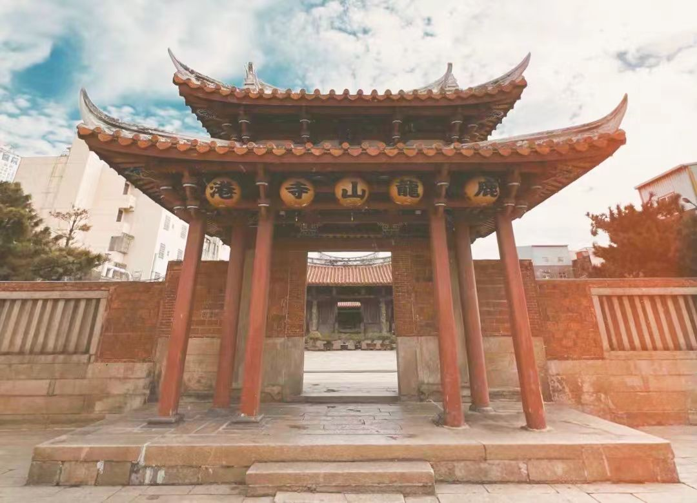

传奇：鹿港龙山寺位于台湾彰化县鹿港镇，是台湾现存最完整的清代建筑群，也是台湾规模最大、历史最悠久的佛寺，素有"台湾紫禁城"、"台湾建筑之宝"的美誉。龙山寺始建于明永历二十年（1666年），由泉州移民自福建泉州府晋江县安海龙山寺分香而来，最初建于鹿港旧港畔（今大有街一带）。清乾隆五十一年（1786年），迁建于现址。寺庙占地1600坪（约5300平方米），坐东朝西，为三进二院七开间的宫殿式建筑，布局严谨，规模宏大。寺内供奉观世音菩萨，是台湾观音信仰的重要中心。1983年，龙山寺被指定为台湾"国定古迹"，是台湾最具代表性的古建筑之一。
核心看点：
游览攻略：
交通信息：鹿港龙山寺位于彰化县鹿港镇金门巷81号。从台北出发：①高铁：台北站乘高铁到台中站（约1小时），转乘台湾好行鹿港线或彰化客运到鹿港；②台铁：台北站乘台铁到彰化站（约2小时），转乘彰化客运到鹿港。从台中出发：乘台湾好行鹿港线或彰化客运到鹿港，车程约1小时。龙山寺开放时间：5:00-22:00。免费参观。周边景点有鹿港天后宫（500米）、鹿港老街（300米）、文武庙（800米）、摸乳巷（400米）、半边井（200米）。距台中清泉岗机场20公里，车程30分钟；距彰化火车站15公里，车程25分钟。建议与鹿港天后宫、鹿港老街、文武庙组合游览。
创建缘起：明郑时期，泉州晋江、南安、惠安等地移民渡海来台，开发鹿港。移民为求航海平安、事业顺利，自故乡泉州府晋江县安海龙山寺恭请观世音菩萨分灵来台。明永历二十年（1666年），在鹿港旧港畔（今大有街）建小祠奉祀，此为龙山寺之始。清乾隆五十一年（1786年），因旧庙狭小，迁建于现址，由泉州匠师设计施工，历时12年建成。龙山寺的创建，体现了闽台之间的血缘、神缘、文缘关系。
清代扩建：清代是龙山寺的鼎盛时期。①乾隆年间：迁建现址，奠定规模；②嘉庆年间：增建后殿、钟鼓楼；③道光年间：重修，增添雕刻、彩绘；④光绪年间：再次重修。清代鹿港是台湾第二大港，商业繁荣，龙山寺成为泉州移民的信仰中心，也是鹿港"八郊"（商会）的活动场所。
日据时期：1895-1945年，台湾被日本统治。龙山寺受到保护，但香火受到影响。1920年，龙山寺被指定为"台湾重要寺庙"。1938年，进行大修，由泉州匠师王益顺主持。日据时期，龙山寺成为台湾人民维系中华文化的重要场所。
战后修复：1945年台湾光复后，龙山寺得到修复。1959年，进行大修，修复因地震、台风损坏的建筑。1978年，再次大修，由台湾著名匠师施镇洋主持。1983年，被指定为"国定古迹"。2000年，进行全面修复，历时5年，耗资2亿元新台币。
文物保存：龙山寺保存了大量珍贵文物。①古匾：有清乾隆"慈云远被"、嘉庆"法雨均沾"、道光"慧日常明"等；②碑刻：有嘉庆"龙山寺重建碑记"、道光"重修碑记"等；③法器：有乾隆古钟、古鼓、香炉等；④雕塑：有木雕、石雕、泥塑等。文物是龙山寺历史的见证。
现代发展：龙山寺在现代社会中发挥多重功能。①宗教功能：观音信仰中心，举办法会、祭祀；②文化功能：古建筑展示，传统艺术传承；③教育功能：乡土教育，文化传承；④旅游功能：观光景点，促进地方经济。龙山寺是台湾重要的文化遗产。
总体布局：龙山寺为典型的闽南庙宇布局。①朝向：坐东朝西，面向海洋，庇佑航海；②轴线：南北中轴线，山门-戏台-拜殿-正殿-后殿；③院落：三进二院，前院有天井，后院有花园；④护龙：左右有护龙（厢房），形成封闭院落。布局严谨，主次分明。
建筑形式：龙山寺建筑形式多样。①山门：重檐歇山顶，五开间；②戏台：单檐歇山顶，四柱；③拜殿：卷棚顶，五开间；④正殿：歇山顶，五开间；⑤后殿：硬山顶，五开间；⑥钟鼓楼：二层楼阁式。形式丰富，等级分明。
木构架：龙山寺木构架精湛。①斗拱：有"一斗三升"、"如意斗拱"等多种形式；②梁架：有"三通五瓜"、"拾梁式"等结构；③藻井：戏台有蜘蛛结网式藻井，不用一钉；④榫卯：全部用榫卯连接，不用铁钉。木构架体现了匠师的高超技艺。
装饰艺术：龙山寺装饰丰富多彩。①木雕：梁架、斗拱、雀替、门簪有精美木雕；②石雕：龙柱、石狮、石鼓、石窗有精细石雕；③剪黏：屋脊有剪黏装饰，有龙凤、人物、花鸟；④彩绘：梁枋、墙壁有彩绘，有山水、人物、故事。装饰体现了闽南艺术的特色。
建筑材料：龙山寺用材讲究。①木材：用福州杉、樟木、楠木等；②石材：用泉州白花岗岩、青斗石等；③砖瓦：用红砖、黑瓦；④灰泥：用石灰、糯米、红糖等调制。材料保证建筑的耐久性。
建筑匠师：龙山寺由泉州匠师建造。①设计：泉州匠师设计，体现闽南风格；②施工：泉州匠师施工，带来先进技术；③传承：台湾匠师学习，传承技艺。匠师是建筑的灵魂。
观音信仰：龙山寺主祀观世音菩萨。①观音形象：为"南海观音"，慈祥庄严；②信仰功能：有求必应，救苦救难；③祭祀活动：有日常祭拜、法会、绕境等；④信仰圈：信徒遍布全台，甚至海外。观音信仰是龙山寺的核心。
多元祭祀：龙山寺供奉多种神祇。①佛教：观音、文殊、普贤、地藏等菩萨；②道教：注生娘娘、境主公、土地公等；③民间：十八罗汉、韦驮、伽蓝等。多元祭祀体现了闽台民间信仰的包容性。
法会活动：龙山寺有丰富的法会活动。①三大香期：观音诞辰、成道、出家日；②春节：除夕夜开庙门、抢头香；③中元：盂兰盆会，普度众生；④水陆法会：大型法会，超度亡灵。法会是信仰活动的重要组成部分。
庙会文化：龙山寺是庙会文化中心。①演戏：戏台演歌仔戏、布袋戏酬神；②绕境：神轿出巡，巡境祈福；③市集：庙前有市集，买卖商品；④饮食：有平安粥、寿面等庙食。庙会丰富了民众生活。
民俗艺术：龙山寺传承民俗艺术。①戏曲：歌仔戏、布袋戏表演；②音乐：南管、北管演奏；③舞蹈：跳鼓阵、车鼓阵等；④工艺：木雕、石雕、彩绘等。艺术是信仰的延伸。
社会功能：龙山寺在社会中发挥重要作用。①凝聚：凝聚泉州移民，形成社区；②慈善：举办慈善活动，救济贫困；③教育：传播中华文化，教育民众；④调解：调解纠纷，维护和谐。寺庙是社会的稳定器。
历史价值：龙山寺是台湾历史的见证。①移民史：泉州移民开发台湾的见证；②建筑史：清代闽南建筑的典范；③宗教史：观音信仰在台湾传播的实证；④社会史：鹿港发展史的缩影。龙山寺是历史的"活化石"。
科学价值：龙山寺蕴含丰富的科学技术。①建筑科学：木构架、斗拱、藻井等结构科学；②材料科学：木材、石材、砖瓦等材料的应用；③工艺科学：木雕、石雕、剪黏等工艺技术；④环境科学：选址、布局的环境适应性。龙山寺是古代科技的结晶。
艺术价值：龙山寺是艺术的宝库。①建筑艺术：布局严谨，形式优美；②雕塑艺术：木雕、石雕技艺精湛；③绘画艺术：彩绘色彩鲜艳，构图巧妙；④整体艺术：建筑与环境的和谐统一。龙山寺是"艺术的博物馆"。
文化价值：龙山寺是闽台文化的载体。①闽南文化：闽南建筑、艺术、信仰的集中体现；②移民文化：泉州移民文化的传承；③信仰文化：观音信仰文化的传播；④社区文化：鹿港社区文化的中心。龙山寺是文化交融的结晶。
教育价值：龙山寺是重要的教育基地。①历史教育：了解台湾开发史；②艺术教育：学习传统建筑艺术；③宗教教育：认识民间信仰；④乡土教育：培养爱乡情怀。龙山寺是"露天的教室"。
保护与传承：龙山寺得到科学保护。①法律保护：1983年指定为"国定古迹"；②规划保护：编制保护计划，划定保护区；③工程保护：定期维修，保护建筑；④研究展示：开展研究，出版成果；⑤教育推广：举办讲座、导览，传播文化；⑥社区参与：社区居民参与保护，形成保护网络。龙山寺的保护经验，为古建筑保护提供了成功范例。